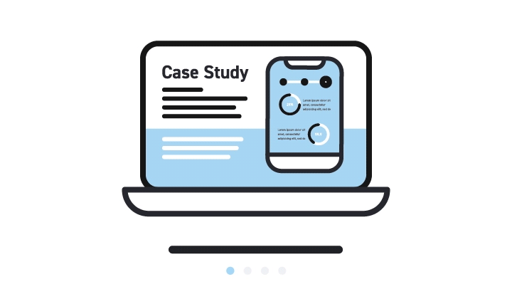

Case Studies 
1ST TEST IMAGE -
Output on WolfFrame: remote control
Output on MobileNet:
remote control,Winner-Tie
2ND TEST IMAGE -

Output on WolfFrame:
water bottleOutput on MobileNet:
water bottleWinner- It's A TIE
3RD TEST IMAGE -
Output on WolFrame:
first-aid kitOutput on MobileNet:
spotlightWinner- Wolframe
4TH TEST IMAGE -
Output on WolFrame:
laptopOutput on MobileNet:
packetWinner- MobileNet
5TH TEST IMAGE -